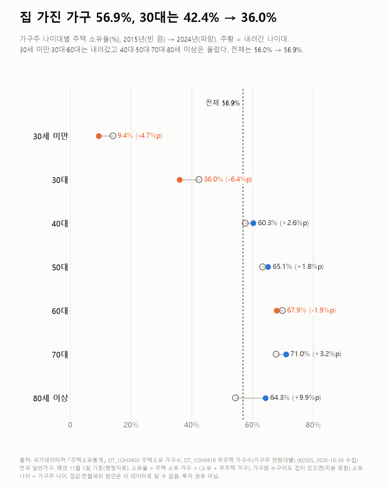
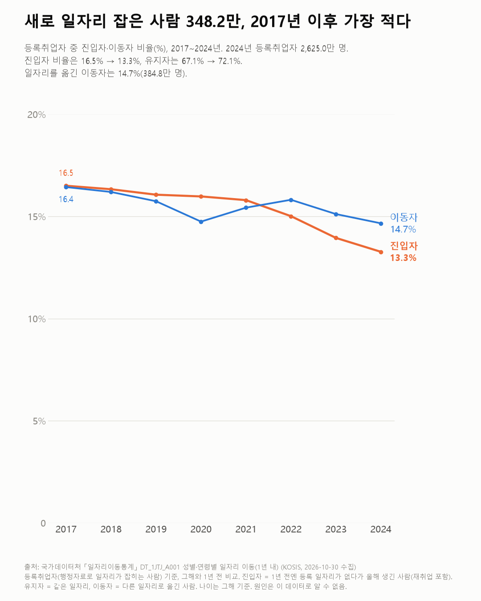
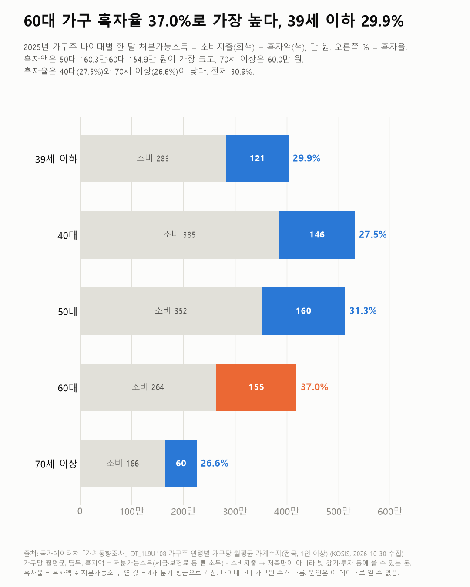

데이터 한 컷
흩어진 공공데이터로 질문 하나에 차트 한 장. 출처와 한계를 함께 공개합니다.
- 출처표 이름과 수집일
- 한계이 데이터로 말할 수 없는 것
- 전제데이터를 보기 전에 적은 기준
- 새 글화제자산 · 청년
36.0%2024년 30대 가구의 주택 소유율(2018년 42.1%부터 6년 연속 하락; 전체 56.9%)
집 가진 가구 56.9%, 30대는 42.4% → 36.0%
주택소유통계
- 화제일과 이직 · 청년
348.2만2024년 1년 새 등록 일자리를 새로 가진 사람(2017년 이후 최저; 15~29세는 2017년 137.2만 → 113.0만)
새로 일자리 잡은 사람 348.2만, 2017년 이후 가장 적다
일자리이동통계
- 화제돈 · 생활비
37.0%2025년 60대 가구의 흑자율(처분가능소득 중 쓰고 남은 비율; 39세 이하 29.9%)
60대 가구 흑자율 37.0%로 가장 높다, 39세 이하 29.9%
가계동향조사
지난 글
- 48.8%화제청년 · 돈신혼부부 맞벌이 59.7%, 아이 없는 부부 48.8%신혼부부통계
- 2,957.6만 vs 1,958.5만화제여가2025년 나간 한국인 2,957.6만, 들어온 외국인 1,958.5만출입국자 및 체류외국인통계
- 194.0만 원화제월급 · 일과 이직정규직 405.2만, 비정규직 211.2만 원근로형태별 부가조사
- 414.7만화제일과 이직 · 노후65세 이상 취업자 414.7만, 20대(344.2만)보다 많다경제활동인구조사
- 11.7%화제창업 · 돈새로 생긴 기업 11.7%(2025), 사라진 기업 10.1%(2024)기업생멸행정통계
- 12.0%화제사는 곳2025년 주소 옮긴 사람 100명당 12.0명, 2000년엔 19.0명국내인구이동통계
- 158분화제생활시간 · 결혼·가족배우자 있는 남녀 가사·돌봄 차이, 하루 258분 → 158분생활시간조사
- 33.0%화제돈 · 청년1년 새 소득 순위가 바뀐 사람 33.0%, 7년 중 가장 적다소득이동통계
- 10.0%화제청년20대 10.0%가 이주배경, 대부분 외국인이주배경인구통계·인구총조사
- 38.9%화제기기와 생활 · 개발생성형 AI 써 본 사람 12.3% → 38.9%, 2년 새 3배지능정보사회이용자패널조사
- 1,858원화제돈 · 생활비휘발유 리터당 1,858원, 경유와 차이는 14원석유제품가격통계
- 4.3%화제돈 · 생활비외식 제외 개인서비스 물가 4.3%↑, 전체 2.9%소비자물가조사
- 26개월 연속화제사는 곳 · 청년출생아 26개월 연속 증가, 최근 1년 27.9만 명인구동향조사
- −14.7만 명화제일과 이직 · 청년청년 취업자 14.7만 명 감소, 인구 감소분 6.5만경제활동인구조사
- 77.0% → 50.6%여가 · 기기와 생활영화관 간 사람 77.0%(2019) → 50.6%국민문화예술활동조사
- 22.2만 → 45.8만 원돈 · 생활비학생 1인당 사교육비 월 22.2만 → 45.8만 원초중고사교육비조사
- 42.5% → 9.4%일과 이직 · 생활시간주 54시간 이상 일하는 취업자, 42.5% → 9.4%경제활동인구조사
- 44.9% → 54.0%일과 이직 · 월급비정규직 고용보험 44.9% → 54.0%근로형태별 부가조사
- 9.0%일과 이직 · 노후가장 오래 다닌 일자리, 정년퇴직으로 그만둔 사람 9.0%고령층 부가조사
- 59.1% → 69.2%일과 이직 · 돈앞으로도 일하고 싶다는 55~79세, 59.1% → 69.2%고령층 부가조사
- 13.0% → 25.3%일과 이직 · 청년첫 일자리를 공개시험으로, 13.0% → 25.3%청년층 부가조사
- 16.2% → 51.0%월급 · 청년첫 월급 200만 원 이상, 16.2% → 51.0%청년층 부가조사
- 40.7% → 22.1%일과 이직 · 청년청년 시험 준비, 공무원 40.7% → 22.1%청년층 부가조사
- 22.7% → 29.1%돈 · 청년내 세대 계층 상승 가능성 높다, 22.7% → 29.1%사회조사
- 27.3% → 17.7%돈 · 자산1년 새 빚이 늘었다는 가구주, 27.3% → 17.7%사회조사
- 33.2% → 18.2%돈 · 생활비부모 노후는 가족이 돌봐야, 33.2% → 18.2%사회조사
- 83.6% → 78.8%돈 · 건강우울할 때 이야기할 사람 있다, 83.6% → 78.8%사회조사
- 34.8% → 24.9%돈 · 생활비지난 1년 현금 기부, 34.8% → 20.6% → 24.9%사회조사
- 14.5%일과 이직 · 월급일 때문에 배운 사람 14.5%, 남성 17.4%·여성 11.6%평생학습개인실태조사
- 12.1만 원돈 · 생활비반려동물 1마리, 한 달 양육비 12.1만 원반려동물양육현황조사
- 37.0% → 51.4%건강 · 여가한 달에 한 번 이상 마시는 여자 37.0% → 51.4%국민건강영양조사
- 67.4%개발 · 일과 이직SW 인력 충원 계획 없는 기업 67.4%SW융합실태조사
- 52.5%청년 · 사는 곳'결혼은 해야 한다' 62.7% → 48.1% → 52.5%사회조사
- 9.9일 → 13.2일일과 이직 · 직장 인식연차, 2018년 9.9일 → 2024년 13.2일 썼다근로자 휴가조사
- 3.2%인플루언서 · 기기와 생활유튜브 보는 사람 100명 중 3명이 채널 운영소셜미디어이용자조사
- 49.4%인플루언서 · 기기와 생활주로 쓰는 SNS, 인스타그램 31.4% → 49.4%한국미디어패널조사
- 13.8% → 24.3%사는 곳 · 청년혼자 사는 20대, 2015년 13.8% → 2025년 24.3%등록센서스
- 11.8% → 28.0%돈 · 생활비소득에 만족한다, 2011년 11.8% → 2025년 28.0%사회조사
- 54.3%일과 이직 · 직장 인식직장 잃을까 불안하다, 일하는 사람 54.3%사회조사
- 54.4% → 34.3%일과 이직 · 생활시간'일이 우선', 2011년 54.4% → 2025년 34.3%사회조사
- 52.0% → 68.6%돈 · 자산노후 준비, 60세 이상은 늘고 20대는 줄었다사회조사
- 50.8% → 71.6%여가 · 생활시간주말엔 쉰다, 2015년 50.8% → 2025년 71.6%사회조사
- 24.6% → 38.3%일과 이직 · 월급일자리에 만족한다, 2011년 24.6% → 2025년 38.3%사회조사
- 76.1% → 63.8%일과 이직 · 청년공대 취업률 76.1% → 63.8%, 인문과 차이 17%p → 7%p졸업자 취업통계
- 28.7% → 32.0%건강 · 생활시간스트레스 많다: 40대는 늘고, 70대 이상은 절반 가까이로국민건강영양조사
- 43.8%일과 이직 · 청년20대 비정규직 비율, 2019년 38.3% → 2026년 43.8%근로형태별 부가조사
- 7.1%일과 이직 · 청년'그냥 쉬었다'는 20대, 2.7% → 7.1%경제활동인구조사
- 77.5%돈 · 창업온라인쇼핑 94조 → 275조 원, 모바일 78%온라인쇼핑동향조사
- 33% vs 53%기기와 생활 · 개발20대 아이폰 비중, 조사마다 33%와 53%방송매체이용행태조사
- 40.0%일과 이직 · 돈직업 고를 때 1순위는 15년째 '수입'사회조사
- 31.5%여가해외여행 간 사람, 2021년 1.1% → 2025년 31.5%사회조사
- 62.9%여가 · 생활시간주 1회 이상 운동 62.9%, 10대만 4년 연속 줄었다국민생활체육조사
- 55.7% → 38.5%여가 · 생활시간1년에 책 한 권, 성인 55.7% → 38.5%국민 독서실태조사
- 4.0배일과 이직 · 돈근속 20년 이상 848만 원, 1년 미만 214만 원임금근로일자리 소득
- 39.4%창업 · 돈새로 연 가게 10곳 중 4곳은 온라인 판매국세통계 생활업종
- 2.24 → 2.00배일과 이직 · 돈대기업·중소기업 월급 차이, 비율은 좁혀지고 금액은 커졌다임금근로일자리 소득
- 16~39%인플루언서 · 돈크리에이터 몫, 수익 종류에 따라 16~39%디지털크리에이터미디어산업 실태조사
- 32분 → 71분인플루언서 · 생활시간20대 '비디오 시청' 하루 32분 → 71분생활시간조사
- +42%돈 · 생활비1인 가구 지출 6년 새 +22%, 오락·문화는 +42%가계동향조사
- 22.6% → 13.8%기기와 생활 · 여가사진 취미, 2019년 22.6% → 2025년 13.8%국민여가활동조사
- −34%일과 이직 · 개발소프트웨어 개발자 구인, 3년 새 34% 줄었다직종별사업체노동력조사
- 5% → 18%일과 이직 · 청년첫 직장을 그만둔 이유, '계약 끝남'이 5% → 18%청년층 부가조사
- +14% vs +49%돈 · 자산8년 새 순자산, 전체 +49% · 30대 가구 +14%가계금융복지조사
- 36.5%돈 · 창업창업 5년 뒤 살아남은 기업은 36.5%기업생멸행정통계
- −69분일과 이직 · 생활시간일하는 사람의 평일, 25년 새 일은 69분 줄었다생활시간조사
- +44.1%돈 · 생활비10년 새 물가 23%, 먹거리는 44% 올랐다소비자물가조사
- 45.8%일과 이직입사 1년 미만, 1년 뒤 같은 직장에 남은 사람은 46%일자리이동통계
- 2.2배일과 이직 · 돈개발자 월급, 경력 10년 이상은 1년 미만의 2.2배고용형태별근로실태조사
- 0.55 → 0.15대기기와 생활디지털카메라는 줄고, 태블릿은 늘었다방송매체이용행태조사 + 한국미디어패널
- 923만 원 vs 7,100만 원돈 · 인플루언서'유튜버 평균 수입'은 7,100만 원? 923만 원?국세통계 원천징수
- 57.8%일과 이직 · 돈이직하면 월급이 오를까? 10명 중 6명꼴일자리이동통계
- 21 / 25구사는 곳서울 21개 구는 '20대만 들어오는 동네'였다인구이동
- +35,937명사는 곳서울은 사람이 빠져나가는데, 20대는 들어왔다인구이동 + 주민등록인구